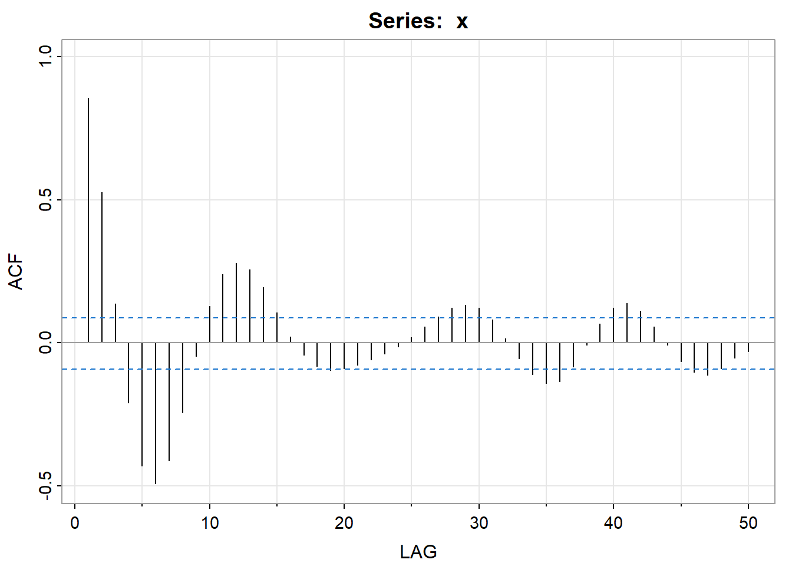
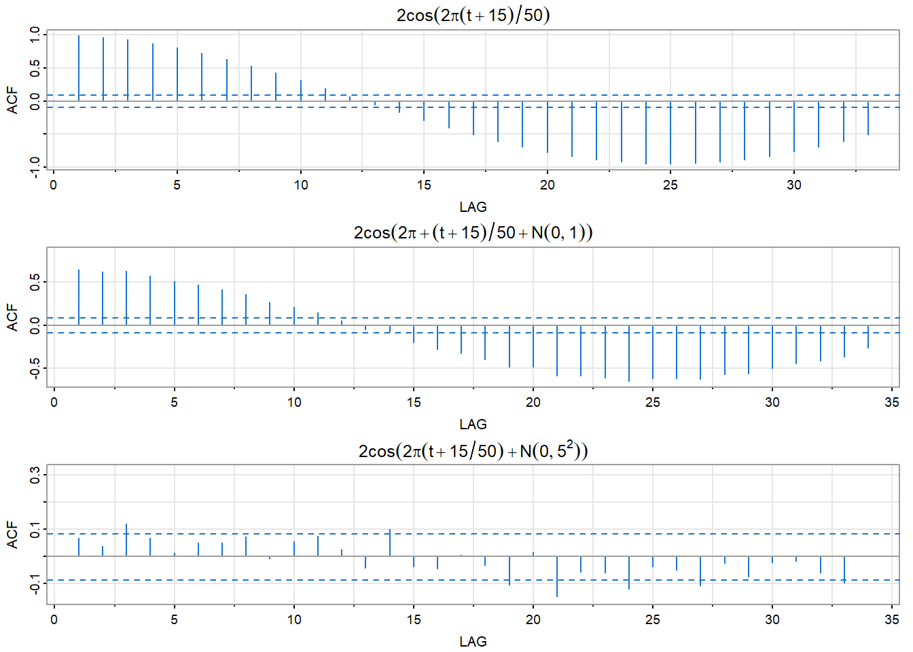

Chapter 2 第二章作业
2.1 2.11 高斯白噪声序列
2.2 2.12 移动平均序列
2.3 2.13 AR模型
模拟一个例 1.9 中给出的 AR 模型，模拟序列长度为 n = 500。然后绘制其滞后 1 到 50 阶的样本 ACF。从样本 ACF 可以大致得到数据循环行为的什么结论？
set.seed(90210)
w=rnorm(500+50) # 50 extra to avoid startup problems
x=filter(w,filter = c(1.5,-.75),method = "recursive")[-(1:50)]
acf1(x,50)
## [1] 0.86 0.53 0.14 -0.21 -0.43 -0.49 -0.41 -0.24 -0.05 0.13 0.24 0.28
## [13] 0.26 0.19 0.11 0.02 -0.04 -0.08 -0.10 -0.09 -0.08 -0.06 -0.04 -0.01
## [25] 0.02 0.06 0.09 0.12 0.13 0.12 0.08 0.02 -0.05 -0.11 -0.14 -0.13
## [37] -0.08 -0.01 0.07 0.12 0.14 0.11 0.06 -0.01 -0.06 -0.10 -0.11 -0.09
## [49] -0.05 -0.03随着样本ACF阶数的增加，ACF将逐渐收敛到0。
2.4 2.14 信号加噪声模型
4 模拟例 1.11 中给出的信号加噪声模型，其中（a）\(\sigma_{w}\) = 0,（b）\(\sigma_{w}\) = 1，（c）\(\sigma_{w}\) = 5。模 拟序列长度为 n = 500。然后绘制生成的这三个序列的滞后 1 到 100 阶的样本 ACF。 从这三个序列的样本 ACF 可以大致得到数据循环行为的什么结论？
t=1:500
cs=2*cos(2*pi*(t+15)/50) #signal
w1= rnorm(500,0,0) #noise
w2= rnorm(500,0,1)
w3= rnorm(500,0,5)
par(mfrow=c(3,1))
acf1(cs, col=4,main=expression(2*cos(2*pi*(t+15)/50)))## [1] 0.99 0.97 0.93 0.87 0.81 0.73 0.64 0.54 0.43 0.31 0.19 0.07
## [13] -0.05 -0.17 -0.29 -0.40 -0.51 -0.61 -0.69 -0.77 -0.83 -0.88 -0.92 -0.94
## [25] -0.95 -0.94 -0.92 -0.88 -0.83 -0.77 -0.69 -0.61 -0.51## [1] 0.65 0.62 0.63 0.57 0.51 0.48 0.42 0.36 0.27 0.22 0.15 0.05
## [13] -0.05 -0.07 -0.20 -0.27 -0.32 -0.40 -0.48 -0.49 -0.59 -0.59 -0.61 -0.65
## [25] -0.62 -0.62 -0.63 -0.57 -0.56 -0.50 -0.45 -0.41 -0.36 -0.26
## [1] 0.07 0.04 0.12 0.07 0.01 0.05 0.05 0.07 -0.01 0.06 0.07 0.03
## [13] -0.04 0.10 -0.04 -0.04 0.01 -0.03 -0.11 0.01 -0.15 -0.06 -0.06 -0.12
## [25] -0.04 -0.05 -0.11 -0.03 -0.08 -0.02 -0.02 -0.06 -0.10 0.00方差越大样本的ACF越小。